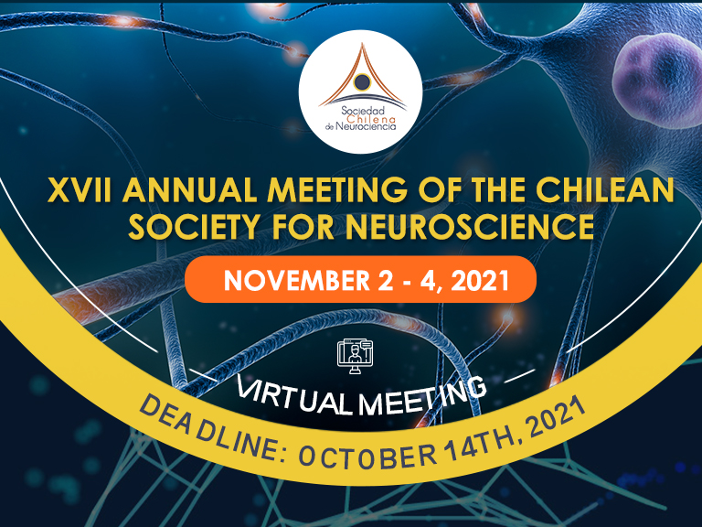

Estimado(a) Socio(a):
Tenemos el agrado de enviar el segundo comunicado acerca de la XVII Reunión Anual de nuestra Sociedad, que tendrá lugar en formato remoto.
Esperamos contar con su participación y la de sus estudiantes, la que sin duda contribuirá a dar realce a nuestra XVII Reunión Anual.
El idioma oficial de este congreso será el inglés, por lo que los resúmenes y paneles deben ser escritos y presentados en ese idioma.
En relación a las comunicaciones libres se sugiere indicar el modo de presentación (oral o poster). Sin embargo, el Comité Organizador definirá finalmente la modalidad de presentación.
PLAZO PARA RECEPCIÓN DE LOS RESÚMENES
Comunicaciones Libres, Poster, Conferencias y Simposios: 14 de octubre
El resumen se debe enviar a la plataforma que se habilitará a partir del 27 de septiembre en https://play.4id.science/neuroc6
COSTOS DE INSCRIPCIÓN Y ENVÍO DE RESÚMENES
Simposiantes y conferencistas internacionales: Liberados de pago
Estudiantes de pre y postgrado: Liberados de pago
Socios e Investigadores postdoctorales: $20.000 | US$28
No socios: $30.000 | US$40
Resúmenes: $15.000 US$20
Existirá una modalidad de registro “LABORATORIO” que permitirán incluir número ilimitado de participantes y resúmenes (del mismo laboratorio) por un costo de $120.000 (US$ 160)
PROGRAMA
Symposia
1.- Rare genetic diseases and their impact on neurodevelopment and CNS function.
Coordinator: Maria Paz Marzolo
2.- Ecological Cognitive Neuroscience: moving towards real-life Science.
Coordinator: Rodrigo Montefusco; María de los Ángeles Juricic
3.- Microexons and Central Nervous System Development.
Coordinator: Maria Estela Andres / Paola Haeger
insights into gene expression dysregulation”. Departamento de Ciencias Biomédicas, Facultad De Medicina, Universidad Católica Del Norte, Coquimbo, Chile.
interesting case of LSD1”. Department of Medical Biotechnology and Translational
Medicine, Università degli Studi di Milano-Via Fratelli Milano. Italy.
4.- Mente, Cerebro y Educación.
Coordinator: Paulo Barraza
5.- Young Neuroscientist Symposium.
Coordinator: Patricio Orio
6.- Brain aging and glial cells – When neuroinflammation shapes brain function.
Coordinator: Maite Castro / Francisco J. Rivera
7.- Molecular basis of memory and depression.
Coordinator: Jimmy Stehberg
Conference 1
Benno Roozendaal, Donders Institute. Radboud University Medical Center. Nijmegen. The Netherlands.
Title: Stress hormone effects on different aspects of memory quality.
Coordinator: Jimmy Stehberg
Conference 2
Casper Hoogenraad, Genetech, USA.
Title: Building a neuron: cytoskeleton organization and transport mechanisms’
Coordinator: Christian Gonzalez
Roundtable
Coordinator: Christian Gonzalez
“Humberto Maturana (1928-2021): Una visión sistémica de los seres vivos”
Jorge Mpodozis, “Evolución a través de la deriva del Nicho Ontológico”. Departamento de Biología, Facultad de Ciencias, Universidad de Chile.
Juan-Carlos Letelier, “Algo Necesario para entender la génesis del concepto de Autopoiesis: Las interacciones entre Humberto Maturana y Heinz von-Foerster (1963-2002)”. Departamento de Biología, Facultad de Ciencias, Universidad de Chile.
Maria de la Luz Cardenas: “Autopoiesis y Metabolismo”. Bioénergétique et Ingénierie des Protéines, Centre National de la Recherche Scientifique (CNRS), Marseilles, France.
Para mayores informaciones en: https://socneurociencia.cl/
Atentos saludos,
COMITÉ ORGANIZADOR
Archivo: publicado originalmente el 1 de octubre de 2021 en el sitio anterior de la Sociedad (https://socneurociencia.cl/2021/10/01/circular-2-reunion-anual-sociedad-chilena-de-neurociencia/).